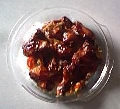

Honey chicken
2 k.g. of Chicken Pieces
¼ cup Dark Soy Sauce
¼ cup Oil
2 Teaspoons of Crushed Garlic 

2 Teaspoons of Crushed Ginger
1 tablespoon of honey
Mix all the marinade mixture together and microwave it for a minute.
Lay the chicken pieces in a single layer in a deep pan.
Pour the marinade mixture and marinate the chicken for at least an hour or more.
Cover the pan and bake the chicken in a moderate oven, 170c, for about a hour.after an hour turn the chicken pieces over and bake covered for another half an hour.
Lift the lid and bake the chicken for another 10 minutes or till crisply brown.
Lift the chicken pieces and put them in another ovenproof dish.
Turn the oven down to low and put the chicken back.
Strain the juices in the pan into a jug.Spoon out all the fat and mix a teaspoon or two of cornflour dissolved in some cold water in the juice. Return to microwave and heat for a half minute or 1 till the juice is thick.
You can keep the juice in the jug or pour over the chicken pieces.
Serve with boiled rice and stir fry vegetables.If the juice is still in the jug pour over the ckicken and rice.
If the juice is not enough put some cold water in the pan that the chicken was cooked in and swirl it around till you have some stock. Add this to the juice with some more cornflour. Test for taste. It should be a little sweet. If not add some more honey and soy sauce to the juice.